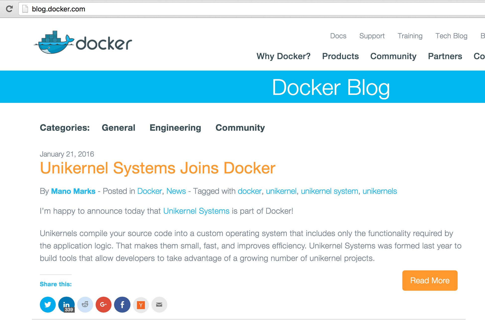

Matt Gray - @portedegrange
Consider a simple web service, serving static webpages cat pictures over HTTP, running in a virtualised environment like AWS
What "machinery" is traditionally required to perform this task?
-------------------
| web server config |
-------------------
| web server | < many features you don't need
-------------------
| OS libraries | < huge APIs (+bugs ?)
-------------------
| OS kernel | < driver support for old hardware
-------------------
| hypervisor |
-------------------
| hardware |
-------------------
It would be nice if we didn't have to worry about securing and maintaining all this stuff!
How about?
---------------------
| web server + config | < web server is the (uni)kernel
---------------------
| hypervisor |
---------------------
| hardware |
---------------------
No unnecessary dependencies, just the things you need to run your application!
Mirage OS is one approach to building unikernels.
Isn't writing your own kernel a bit, errr, difficult???
open Lwt
module Main (C: V1_LWT.CONSOLE) = struct
let start c =
lwt () = OS.Time.sleep 5.0 in
C.log c "hello unikernel world";
return ()
end
What's going on?
We write Mirage applications in the OCaml programming language
Mirage is a library operating system.
Mirage can create Unix executables or unikernels that run on the Xen hypervisor
Mirage has libraries that implement a network stack, access to block storage, and other things that your OS would usually provide
The `mirage` command line tool configures your application code to use the correct libraries, based on the desired target.
In the rest of this hands on session, I hope we can all build a unikernel for that most noble of activities, serving cat pictures to the Internets!
vagrant init mgray/mirage-xen-virtualbox
vagrant up --provisioner=virtualbox
vagrant up --provisioner=virtualbox
Unikernel.org - Not just Mirage OS
News just in!

Mirage OS homepage
Learn OCaml:
Run a Mirage OS unikernel in AWS
http://www.somerandomidiot.com/blog/2014/03/14/its-a-mirage/
Go and see Mindy's talk this afternoon!
Cats courtesy of:
Scott Granneman - https://commons.wikimedia.org/wiki/File:Rsgranne_-_Cats_cats_cats!_(Arrow_Rock,_Missouri,_20050703)_03_(by-sa).jpg